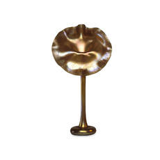

|
|
Department
of Medieval and Modern Europe > galleries
> Room
48
Europe
and America: The 20th Century
|  |
Europe
and America: The 20th Century
This room follows on from Room 47 (The Nineteenth
Century) with displays of metalwork, jewellery, ceramics and
glass from 1900 to 1950. The display is changed as new acquisitions
are made. Particular strengths of the collection include Continental
Art Nouveau, design in Germany from about 1900-1930 (including the
work of the Darmstadt artists' colony and the Bauhaus), Russian
Revolutionary porcelain, and American applied arts of the interwar
years.
Almost all of the objects in this gallery have been acquired in
the last twenty or so years since 1979. It was the acquisition of
the Hull Grundy Gift in 1978 (see Room 47) that prompted the Museum
to extend its collections in other areas where it already had great
strengths: ceramics, glass, metalwork, jewellery.
Expanding
the ideas for design reform that began in the late 19th century,
such as the involvement of artists...more
 floor
map
floor
map
opening
hours
|
| ...in
industry, the displays examine the different centres of production,
whether artistic communities or schools of design. Particular emphasis
is given to the variation in the circumstances that gave rise to the
creation of these objects: whether individually made in a small workshop
or factory-made in huge quantities, whether they were designed by
people who had spent their lives creating objects or by outside artists
who may not have been familiar with industrial processes.
The Modern Collection
was begun in 1979. A small gallery devoted to the collection opened
in 1982. In 1994 the second edition of Decorative Arts 1850-1950.
A catalogue of the British Museum collection was published. Since
then, many new objects have been acquired, by gift, purchase or
bequest, and are shown for the first time. One group covers the
interwar years and includes powerful statements such as the silver-plated
hot water urn designed in 1934 by the Finnish architect Eliel Saarinen,
and, on a smaller scale but no less dramatic: a lacquered silver
bracelet of 1926-28 by Gérard Sandoz. The other group is
devoted to the post-war period and concentrates on the 1940s to
the 1960s. The pots-war section is still very small and unrepresentative.
Objects range from one-off hand-made pieces such as the Murano vase
designed by Dino Martens in 1954 to limited editions such as Floris
Meydam’s vase for Leerdam of 1963, as well as mass-produced items
such as the 1951 Cona coffee-machine by Abram Games.
|
More galleries: 41
| 42 | 43 | 44
| 45 | 46 | 47
| 48

|